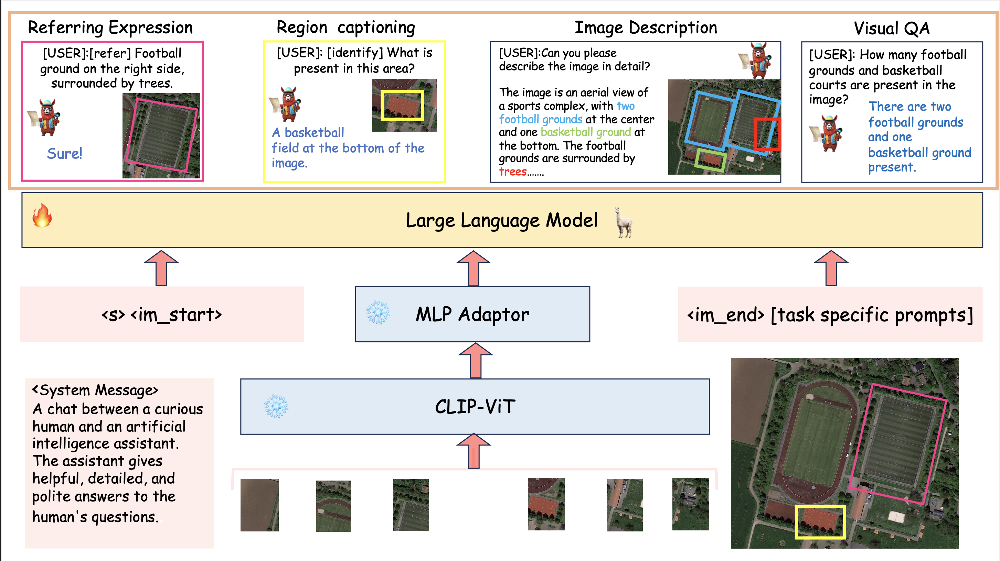
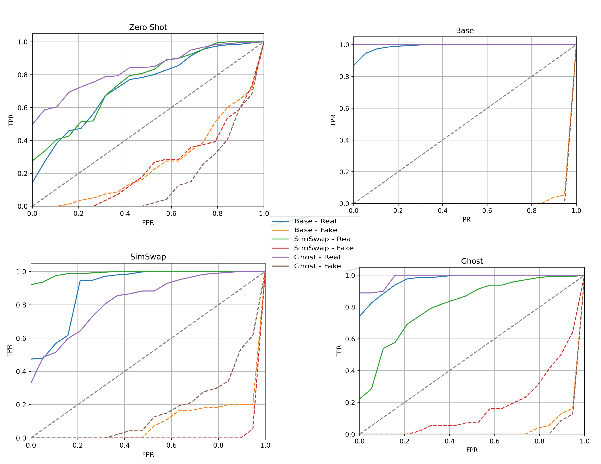
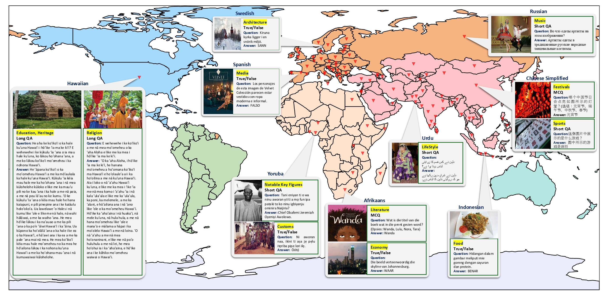
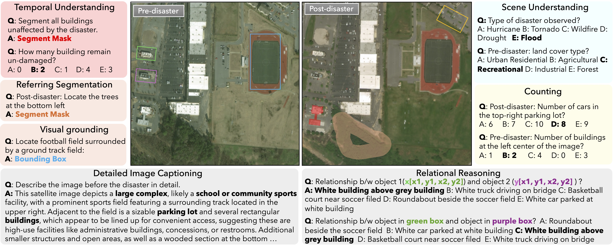

Research Interests
I mostly work in the intersection of Deep Learning and Computer Vision, particularly involving Generative AI. Currently working on Long video/ movie understanding (Multimodal) and Embodied AI (Multiagent Robotics). Earlier, I worked on Vision Language Models for Remote Sensing and Deepfakes.
|
News
[July 2024] - Joined Prof. Ivan Laptev and Dr. Makarand Tapaswi as Research Associate-I at MBZUAI.
[June 2024] - Attending CVPR-24 in Seattle, USA 🥳🥳.
[June 2024] - Graduated from BITS-Pilani, Hyderabad Campus 🥳🥳.
[May 2024] - INDIFACE accepted to IEEE-FG Workshop 🎉🎉.
[March 2024] - Geochat accepted at CVPR-24 🎉🎉.
[Nov 2023] - Released GeoChat :)
[June 2023] - Joined MBZUAI as a Research Assistant.
[June 2022] - Joined LASII Lab at IIT Ropar as a Summer Research Intern.
|
Publications
* denotes joint first authors
|
|

|
GeoChat: Grounded Large Vision-Language Model for Remote Sensing
Kartik Kuckreja*,
Mohammad Sohail Danish*,
Muzammal Naseer,
Salman Khan,
Abhijit Das,
Fahad Shahbaz Khan
Computer Vision and Pattern Recognition-2024
Code
/
Paper
|
|

|
INDIFACE: Illuminating India's Deepfake Landscape with a Comprehensive Synthetic Dataset
Kartik Kuckreja,
Ximi Hoque,
Nishit Poddar,
Shukesh Reddy,
Abhinav Dhall,
Abhijit Das
FG-24 SDFGA
Paper
|
|

|
All Languages Matter: Evaluating LMMs on Culturally Diverse 100 Languages
Ashmal Vayani,
Dinura Dissanayake,
Kartik Kuckreja,
Multiple Authors..
Under Review CVPR-25
Code
/
Paper
|
|

|
GEOBench-VLM: Benchmarking Vision-Language Models for Geospatial Tasks
Mohammad Sohail Danish*,
Akhtar Munir*,
Syed Roshaan,
Kartik Kuckreja,
Fahad Shahbaz Khan
Paolo Fraccaro,
Alexandre Lacoste,
Salman Khan
Under Review CVPR-25
Code
/
Paper
|
|
{kind=link}